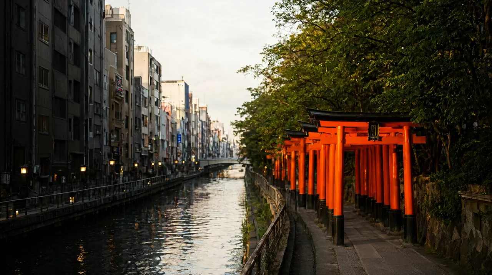

간사이

간사이 권역에서 지금 열려 있는 도시와 글을 한곳에 모았습니다. 이 글은 도시를 어떻게 묶어 갈지 정하는 권역 안내이고, 세부 내용은 도시 허브와 일정 글에서 확인하세요. 기준일 2026-10-22. 환율은 오사카 허브와 같은 100엔 = 약 840원(2026-10-21, open.er-api.com)이며 원화는 모두 "약"입니다.
권역 한눈에 보기
- 한 줄 요약: 숙소를 오사카 한 곳에 두고, 하루만 교토나 나라로 다녀오는 구성이 가장 짐이 적고 아이가 덜 힘듭니다.
- 지금 열린 도시는 오사카, 교토, 고베, 나라입니다. 교토, 고베, 나라 허브는 각각 열려 있으니 상세는 해당 허브를 보세요.
| 구분 | 내용 |
|---|---|
| 맞는 사람 | 초등 자녀와 테마파크, 수족관을 가고 싶은 가족. 숙소를 한 곳에 두고 근교를 하루씩 다녀오고 싶은 여행자 |
| 덜 맞는 사람 | 매일 숙소를 옮기며 여러 도시를 도는 일정을 원하는 여행자. 걷는 양을 크게 줄여야 하는 유아 동반 가족 |
| 추천 체류 일수 | 오사카 3박 4일이 기본(오사카 허브). 근교 하루를 더하면 4박 5일(오사카 4박 5일 일정 글) |
도시 비교
| 도시 | 한 줄 요약 | 비행시간 | 추천 일수 | 아이 적합도 | 예상 비용 (글 기준) |
|---|---|---|---|---|---|
| 오사카 | 가족 여행자를 위한 오사카 허브: 이동, 숙소, 일정, 아이 코스, 예산 정리 | 인천에서 간사이 직항 약 1시간 40분~2시간 | 3박 4일 | 높음 | 1인 약 32만~62만원 (숙박·식비 제외) |
| 교토 | 공항이 없는 교토의 접근 방법, 숙소 권역, 아이와 함께하는 일정·예산 정리 | 직항 없음. 인천에서 간사이공항 직항 약 1시간 40분~2시간 후 철도·버스 약 75분~1시간 30분 | 2박 3일~3박 4일 (오사카 거점이면 하루 당일치기) | 높음 | 1인 약 28만~58만원 (숙박·식비 제외) |
| 고베 | 산노미야 거점으로 고베공항 직항과 하버랜드·아리마온천 당일치기를 묶는 가족 여행 허브 | 인천에서 고베공항 직항 약 1시간 35분~2시간 5분 | 2박 3일 (오사카와 묶으면 1~2일 추가) | 높음 | 1인 약 27만~57만원 (숙박·식비 제외) |
| 나라 | 사슴과 대불, 오사카에서 35분 거리의 고도 나라. 당일치기와 1박 구성, 아이 동반 포인트를 정리했습니다 | 직항 없음 (나라에 공항 없음). 인천에서 간사이공항 직항 약 1시간 40분~2시간 후 철도로 약 70~90분 | 당일치기 ~ 1박 2일 (오사카 거점이면 당일치기) | 높음 | 1인 약 25만~55만원 (항공 약 20만~50만원 포함, 숙박·식비 제외, 2박 3일 기준). 오사카 거점 당일치기면 교통·입장료만 추가 |
예상 비용은 도시마다 계산 범위가 달라 바로 비교할 수 없습니다. 각 허브의 예산 항목에서 포함 항목을 확인하세요. 교토, 고베, 나라도 허브가 열려 있습니다.
도시 고르는 법
| 상황 | 추천 | 이유 |
|---|---|---|
| 3박 4일 이하 | 오사카만 | 일정 글 기준으로 USJ 하루와 가이유칸이 이미 하루씩 들어가 근교를 넣을 여유가 적습니다 |
| 4박 5일 | 오사카 거점 + 교토 당일치기 | 4박 5일 일정 글이 교토를 3일차에 넣은 구성입니다 |
| 걷는 양이 부담인 자녀 | 오사카 거점 + 나라 당일치기 | 난바에서 긴테쓰로 약 35분이라 이동이 짧습니다(explore.osaka). 나라 일정 글은 아직 없습니다 |
| 이동 부담을 줄이고 싶음 | 숙소 한 곳 고정 | 짐을 옮기는 날이 없습니다 |
| 교토를 길게 보고 싶음 | 오사카와 교토 숙박 분리 | 아래 루트 3 참조. 교토 숙소 가격은 확인 필요 |
| 예산 | 오사카 거점 | 교통은 JR 신쾌속 580엔, 한큐 410엔처럼 당일치기가 저렴합니다(오사카 관광 안내 사이트). 숙박비는 확인 필요 |
| 계절 | 가을은 교토 혼잡 주의 | 11월 단풍철에 교토가 붐빈다는 안내가 있습니다(4박 5일 일정 글, 오사카 관광 안내 사이트) |
권역 안 이동
오사카에서 당일치기
| 구간 | 수단 | 소요시간 | 요금 (어른, 편도) | 어린이 요금 | 예약 |
|---|---|---|---|---|---|
| 오사카-교토 | JR 신쾌속 (오사카역에서 교토역) | 약 30분 | 580엔 | 확인 필요 (JR 어른 요금의 반액으로 가정, 일정 글과 동일) | 불필요, IC카드 가능 |
| 오사카-교토 | 한큐 특급 (오사카우메다에서 교토가와라마치) | 약 45분 | 410엔 | 확인 필요 | 불필요로 보이나 확인 필요 |
| 오사카-교토 | 게이한 특급 (요도야바시에서 산조 또는 데마치야나기) | 약 48분 | 확인 필요 (역에 따라 다름) | 확인 필요 | 확인 필요 |
| 오사카-교토 | 신칸센 (신오사카에서 교토역) | 확인 필요 (신쾌속보다 약 10분 빠름) | 1,450엔 | 확인 필요 | 확인 필요 |
| 오사카-나라 | 긴테쓰 쾌속급행 (난바에서 긴테쓰나라) | 약 35분 (explore.osaka). 약 39~40분이라는 민간 안내도 있음 | 680엔 | 확인 필요 | 불필요(비공식) |
| 오사카-나라 | 긴테쓰 특급 (난바에서) | 약 30분 (explore.osaka). 약 34분이라는 민간 안내도 있음 | 1,300엔 (explore.osaka). 1,200엔이라는 민간 안내도 있음 | 확인 필요 | 전 좌석 지정(비공식) |
| 오사카-나라 | JR 야마토지 쾌속 | 약 45분 (explore.osaka). 오사카역에서 약 50분이라는 민간 안내도 있음 | 840엔 | 확인 필요 | 불필요(비공식) |
| 오사카-고베 | 한큐 (오사카우메다에서 고베산노미야) | 약 27~33분 | 330엔 | 확인 필요 | 확인 필요 |
| 오사카-고베 | JR 신쾌속 (오사카역에서 산노미야) | 약 21~22분 | 420엔 | 확인 필요 | 확인 필요 |
| 오사카-고베 | 한신 난바선 직통 (난바에서 산노미야) | 약 44~51분 | 420엔 | 확인 필요 | 확인 필요 |
- 교토와 나라의 일부 값은 공식 성격의 관광 안내(오사카 관광 안내 사이트, explore.osaka, 나라 공식 관광 안내)에서 확인했습니다. 고베 구간은 공식 철도 페이지를 열지 못해 민간 안내(오사카 스테이션)이므로 비공식입니다.
- 난바에서 교토로 가려면 먼저 미도스지선으로 우메다나 요도야바시까지 가야 합니다. 그 시간과 요금은 확인 필요입니다(교토 일정 글과 동일).
- 우메다의 JR 오사카역과 한큐 오사카우메다역은 서로 다른 건물이며 걸어서 약 3분입니다(오사카 관광 안내 사이트).
- 어린이 요금은 이번에 철도사 공식 페이지에서 확인하지 못했습니다. 일정 글의 가정(JR은 어른 반액)을 따르되 확인 필요로 둡니다.
간사이공항에서 각 도시로 (개괄)
난바행 철도, 요금, 막차 등 세부는 오사카 허브의 공항 구간을 보세요. 아래는 다른 도시로 바로 가는 방법의 개요입니다.
| 목적지 | 방법 | 소요시간 | 요금 | 메모 |
|---|---|---|---|---|
| 오사카 난바 | 난카이 라피트 또는 공항급행 | 라피트 약 38분, 공항급행 약 45분 | 라피트 일반석 1,670엔, 공항급행 970엔 | 오사카 허브와 같은 값(오사카 스테이션, 내비타임 일본 여행). 난카이 공식 사이트 점검으로 확인 필요 항목 있음 |
| 교토 | JR 하루카 | 약 75분(검색에 나온 간사이공항 안내 발췌, 공식 페이지 열람은 거절됨) | 외국 여권 소지 단기체류자용 WEST QR 편도권 어른 2,200엔, 어린이 1,100엔(2026-10-31까지 판매가). 11월 1일 이후 판매분은 어른 2,700엔, 어린이 1,350엔(JR 서일본 공식) | 여행사에서 사는 바우처 방식이며 하루카 지정석은 탑승 30일 전부터 예약(JR 서일본 공식) |
| 고베 | 리무진 버스 또는 철도 | 버스 약 65분(제1터미널 출발 직행, 비공식). 철도는 약 1시간 34분~1시간 48분, 1,680엔(비공식) | 버스 어른 2,200엔, 어린이 1,100엔(비공식). 하루카 WEST QR 편도권은 고베 어른 2,000엔, 어린이 1,000엔(2026-10-31까지), 11월 1일 이후 2,300엔, 1,150엔(JR 서일본 공식) | 오사카역에서 JR 고베선으로 환승하는 경로가 철도 기본 |
| 나라 | 리무진 버스 또는 하루카 편도권 | 버스 약 1시간 40분(비공식) | 버스 2,400엔(비공식). 하루카 WEST QR 편도권은 나라 어른 1,800엔, 어린이 900엔(2026-10-31까지), 11월 1일 이후 2,200엔, 1,100엔(JR 서일본 공식) | 나라행 철도 소요시간은 확인 필요 |
- 하루카 편도권은 외국 여권 소지자, 단기체류 자격 입국자만 쓸 수 있고 일본 안 판매는 되지 않습니다(JR 서일본 공식). 한국 여권 가족이라면 출발 전에 여행사 상품으로 사는지 확인하세요.
- 가족 기준 기본은 공항에서 난바로 가서 오사카 숙소를 거점으로 삼는 방식입니다. 교토나 나라에서 자는 경우에만 위 직행 방법을 비교하세요.
추천 루트
루트 1. 오사카 거점 4박 5일 + 교토 당일치기
오사카 4박 5일 가족 일정과 교토 당일치기와 같은 구성입니다.
| 일차 | 내용 | 아이 피로 고려 |
|---|---|---|
| 1일차 | 간사이공항에서 난바 숙소로, 도톤보리 산책 | 도착일은 가볍게 |
| 2일차 | USJ 하루 | 점심 뒤 속도 줄이기 |
| 3일차 | JR 신쾌속으로 교토. 철도박물관과 후시미이나리 | USJ 다음 날이라 이나리는 천 개의 도리이 구간까지만 |
| 4일차 | 가이유칸과 덴포잔 | 오후 휴식 |
| 5일차 | 난바에서 간사이공항 | 항공 시각에서 거꾸로 계산 |
- 이동일 처리: 교토 이동은 오전 9시쯤 출발해 오후 5시 전에 돌아오는 흐름입니다. 철도박물관은 수요일에 쉬므로 수요일이면 3일차와 4일차를 바꿉니다(철도박물관 공식).
- 3박 4일 일정 글에 교토 하루를 끼운 구조입니다. 그 글의 USJ 하루와 가이유칸 하루는 그대로입니다.
루트 2. 오사카 거점 + 나라 당일치기
- 교토 대신 나라를 넣는 안입니다. 4박 5일 일정 글의 3일차 자리에 넣는 것이 자연스럽습니다. 오사카 허브는 나라를 "사슴 공원 중심, 난바 숙소에서 가까움"이라고 소개합니다.
- 난바에서 긴테쓰 쾌속급행 약 35분, 680엔(explore.osaka)이라 이동이 짧아 아이가 덜 힘듭니다. 나라 일정 글은 아직 없고 나라 허브에 구성 제안이 있습니다.
루트 3. 오사카와 교토 숙박 분리
- 구성 예: 오사카 3박, 교토 1~2박. 오사카에서 USJ와 가이유칸을 마친 뒤 JR 신쾌속으로 교토로 옮기고, 마지막 날 간사이공항으로 갑니다.
- 장점: 교토 아침 이른 시간과 저녁 시간을 아이와 여유 있게 쓸 수 있습니다. 단점: 짐을 한 번 더 옮기고, 교토에서 간사이공항까지 하루카로 약 75분(비공식 발췌)이 걸립니다.
- 이 루트는 이 사이트에 일정 글이 없습니다. 교토 숙박 가격과 교토 숙소 권역은 교토 허브에서 확인 필요로 남겨 두었습니다.
- 이동일에는 관광을 하나만 넣는 것을 권합니다. 이동일 오후는 체크인과 휴식으로 비워 두세요.
시즌 가이드
기상청 월별 평년값은 이번에 확인하지 못해 기온과 강수 수치는 적지 않습니다.
| 시기 | 특징 | 근거 |
|---|---|---|
| 가을(11월) | 교토 단풍철이라 전체가 붐비고 대기가 늘 수 있어 오전 일찍 움직여야 합니다. 후시미이나리는 오전 9시 전이나 오후 4시 이후가 한산하다는 안내가 있습니다 | 오사카 관광 안내 사이트, 4박 5일 일정 글 |
| 비 오는 날 | USJ가 가장 불리하고, 가이유칸은 실내라 비에 강합니다. 교토는 후시미이나리 대신 교토수족관을 넣는 안이 일정 글에 있습니다 | 4박 5일 일정 글 |
| 봄, 여름, 겨울 | 월별 특징 확인 필요 | 공식 관광 사이트와 기상청 자료 미확인 |
권역 공통 주의
- USJ: 2026-09-01 이후 방문분은 방문일을 정해 입장권을 사야 합니다(USJ 공식).
- 가이유칸: 재입장이 안 됩니다(가이유칸 공식 FAQ). 점심은 관람 전후에 하세요.
- 교토 철도박물관: 매주 수요일 휴관(철도박물관 공식).
- 면세: 2026-11-01 이후 구매분은 세금 포함 가격으로 사고 출국할 때 환급받는 방식입니다(일본 세관).
- 하루카 편도권 가격은 2026-11-01 이후 판매분부터 오릅니다(JR 서일본 공식).
- JR 간사이 에리어 패스는 2026-09-30에 판매가 끝났다고 안내됩니다(오사카 관광 안내 사이트). 교토 당일치기만이라면 패스 없이 IC카드로 충분하다는 안내입니다.
- 난카이 공식 사이트가 점검 중(응답 503)이라 라피트 요금 일부와 난바 출발 막차는 확인 필요입니다(오사카 허브와 동일).
- 현재 재해, 운행 중단, 공사 현황은 공식 자료로 확인하지 못했습니다. 출발 전 철도사와 관광청 공지를 확인하세요.
이 권역의 글
- 오사카 3박 4일 가족 일정 (일정)
- 오사카 2박 3일 가족 일정 (일정)
- 오사카 4박 5일 가족 일정과 교토 당일치기 (일정)
- 오사카 여행 가이드 (도시 허브)
FAQ
- 오사카에서 교토까지 가장 쉬운 방법은 무엇인가요? 처음이면 JR 신쾌속이 기본입니다. 오사카역에서 교토역까지 약 30분, 580엔이며 환승이 없습니다(오사카 관광 안내 사이트).
- 한큐와 JR 중 무엇이 나은가요? 한큐 특급은 410엔에 약 45분이고 시내 중심 가와라마치로 갑니다. JR은 교토역과 후시미이나리 쪽에 편합니다. 교토 일정 글은 JR을 골랐습니다.
- 신칸센을 타면 빠른가요? 신쾌속보다 약 10분 빠를 뿐 요금은 1,450엔이라 패스가 없으면 권하지 않는다는 안내입니다(오사카 관광 안내 사이트).
- 나라는 교토보다 가깝나요? 난바에서 긴테쓰 쾌속급행으로 약 35분, 680엔입니다(explore.osaka). 오사카 숙소가 난바이면 나라가 더 가깝습니다.
- 오사카에서 고베는 얼마나 걸리나요? 오사카역에서 JR로 산노미야까지 약 21~22분, 420엔, 한큐는 약 27~33분, 330엔입니다(비공식).
- 간사이공항에서 바로 교토로 갈 수 있나요? 하루카가 직통이며 약 75분입니다(비공식 발췌). 외국 여권용 편도권 어른 2,200엔, 어린이 1,100엔(2026-10-31까지)입니다(JR 서일본 공식).
- 오사카와 교토에서 따로 자는 게 좋을까요? 교토를 길게 보고 싶을 때만 권합니다. 짐 이동이 생기므로 오사카 거점 당일치기를 기본으로 보세요.
앞으로 추가할 도시
이 권역의 모든 예정 도시가 공개되었습니다.
확인 필요 항목, 공식 출처
확인 필요:
- 어린이 요금 전반(JR, 한큐, 게이한, 긴테쓰, 한신)과 신칸센 소요시간, 게이한 요금
- 난바에서 우메다까지의 지하철 요금과 시간
- 간사이공항에서 교토, 고베, 나라까지의 공식 소요시간과 버스 요금. 간사이공항 공식 페이지는 접속이 거절되어(403) 열지 못했습니다
- 고베와 나라 구간 요금은 민간 안내라 비공식
- 월별 기온과 강수, 현재 재해와 운행 현황, 교토 숙소 가격
공식 출처: 오사카 관광 안내 사이트(osakatourism.org), explore.osaka, JR 서일본 공식(WEST QR 하루카 편도권), 나라 공식 관광 안내(visitnara.jp), 교토 철도박물관 공식, USJ 공식, 가이유칸 공식, 일본 세관. 비공식: 오사카 스테이션, destinationwellknown.com. 세부 주소는 앞머리 sources 참조.